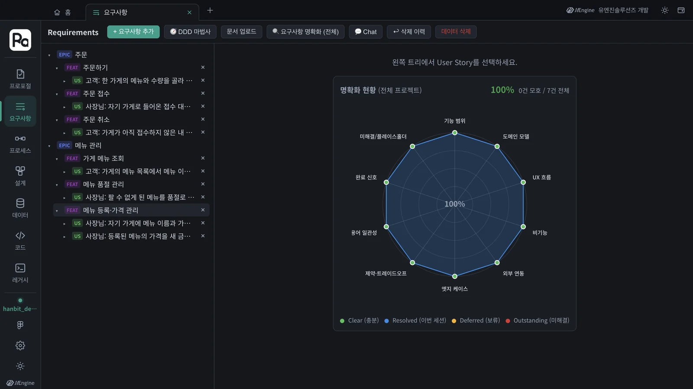
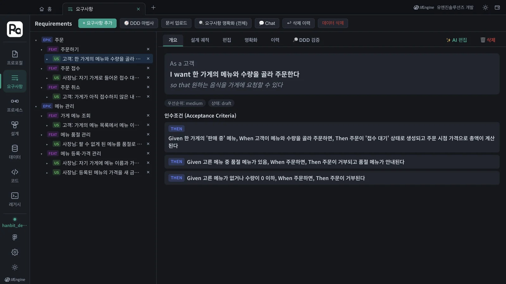
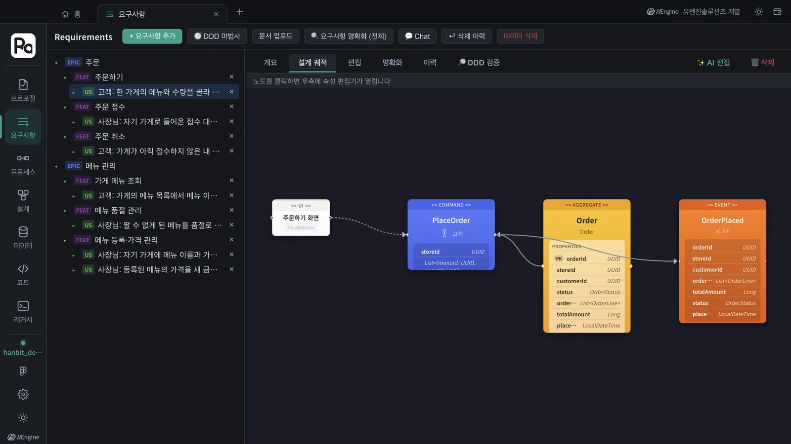
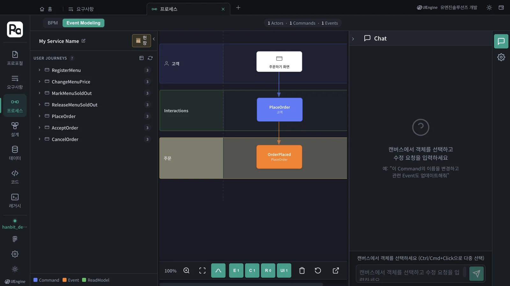
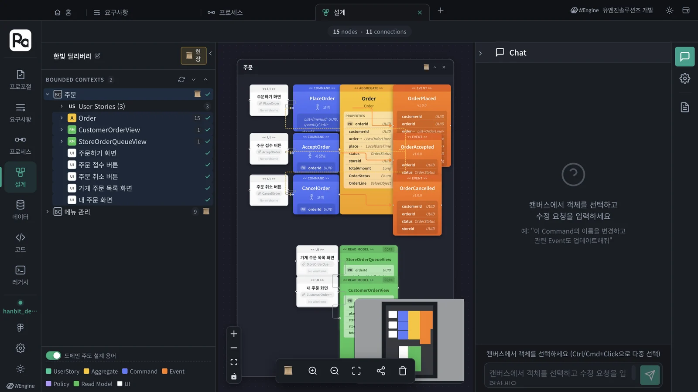
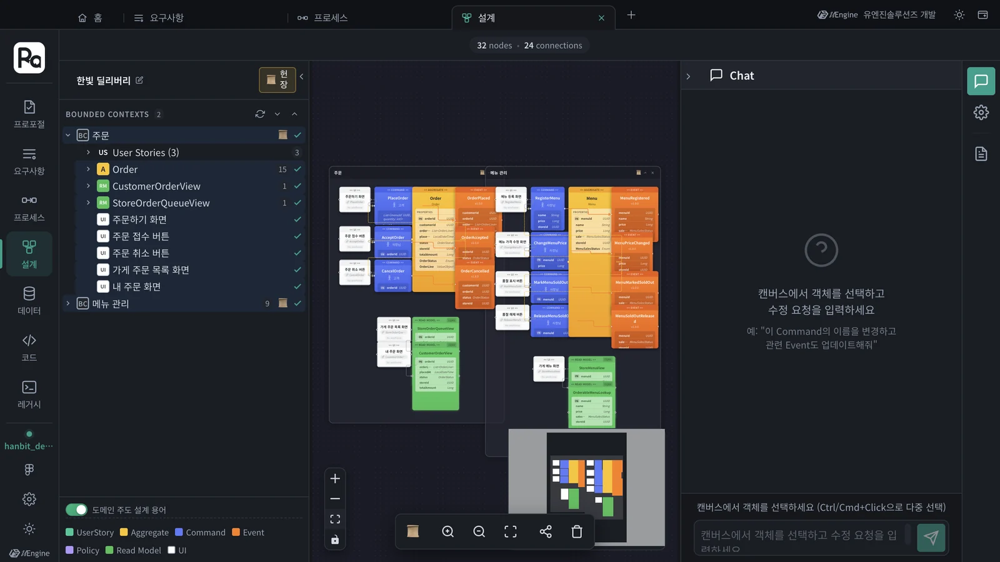
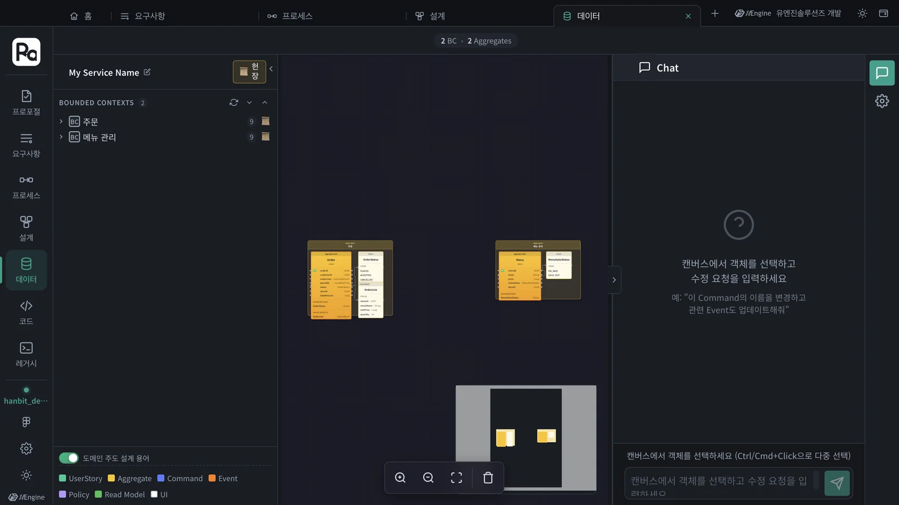

7장에서 수락한 PRO-001의 설계는 이제 프로젝트 그래프에 있습니다. 같은 그래프를 네 가지 눈으로 봅니다 — 요구사항(바운디드 컨텍스트 › 기능 › 스토리 › 인수 조건), 프로세스(이벤트 모델링), 설계 캔버스(UI → 커맨드 → 애그리거트 → 이벤트), 데이터(애그리거트의 엔티티 · 값 객체).
네 탭은 같은 그래프를 봅니다#
| 탭 | 무엇을 보나 | 단위 |
|---|---|---|
| 요구사항 | 바운디드 컨텍스트(EPIC) › 기능(FEAT) › 사용자 스토리(US) › 인수 조건 | 업무 말 |
| 프로세스 | BPM, 이벤트 모델링 — 누가 무엇을 눌러 어떤 일이 일어나는가 | 흐름 |
| 설계 | 바운디드 컨텍스트 안의 UI · 커맨드 · 애그리거트 · 이벤트 · 리드모델 | DDD 구성 요소 |
| 데이터 | 애그리거트의 루트 엔티티 · 값 객체 · 열거형 | 데이터 구조 |
탭은 홈에서 하나씩 열어 두고 오가면 됩니다(2장). 한 탭에서 고친 것은 그래프에 쓰이므로 다른 탭에서도 보입니다.
따라 하기 1 — 요구사항#
- 요구사항 탭을 엽니다. 왼쪽 나무에 EPIC 주문과 메뉴 관리가 있습니다 — 7장에서 수락하며 생긴 바운디드 컨텍스트입니다.
- EPIC 왼쪽의 ▸를 눌러 펼치고, 기능(FEAT)도 펼칩니다. 행 자체를 누르면 펼쳐지는 대신 그 항목의 상세가 열립니다.
- 오른쪽의 명확화 현황은 열 가지 관점(기능 범위 · 도메인 모델 · UX 흐름 · 비기능 · 외부 연동 · 엣지 케이스 · 제약 · 용어 · 완료 신호 · 미해결)으로 요구사항이 얼마나 분명한지 보여 줍니다. 이번 프로젝트는 100%(모호한 것 0건)였습니다.

- 스토리 「고객: 한 가게의 메뉴와 수량을 골라 주문한다」를 누릅니다. 개요에 As a · I want · so that과 인수 조건(Given · When · Then)이 나옵니다.
- 설계 궤적을 누르면 이 스토리가 설계의 어디로 이어지는지 한 줄로 보입니다 — 주문하기 화면(UI) → PlaceOrder(커맨드) → Order(애그리거트) → OrderPlaced(이벤트). 노드를 누르면 오른쪽에 속성 편집기가 열립니다.


툴바의 다른 단추도 알아 두세요 — + 요구사항 추가, DDD 마법사, 문서 업로드(키 필요, 12장), 요구사항 명확화(전체), Chat(말로 고치기), 삭제 이력(지운 것 되살리기), 데이터 삭제(이 프로젝트의 요구사항을 지움 — 누르기 전에 확인).
따라 하기 2 — 프로세스#
- 프로세스 탭을 엽니다. 위에 BPM과 Event Modeling 전환이 있습니다. BPM은 요구사항 문서를 업로드해서(12장의 문서 업로드 경로) 만든 프로세스가 있을 때 채워집니다. 프로포절로 만든 설계는 Event Modeling에서 봅니다.
- Event Modeling을 누릅니다. 왼쪽 USER JOURNEYS에 커맨드별 여정 7개(RegisterMenu … CancelOrder)가 있습니다.
- PlaceOrder를 캔버스로 끌어다 놓습니다. 줄(레인)마다 누가(고객), 무엇을(주문하기 화면 → PlaceOrder), 어느 컨텍스트에서 무슨 일이(주문: OrderPlaced) 일어나는지 보입니다.

아래 E · C · R · UI 단추로 이벤트 · 커맨드 · 리드모델 · 화면을 켜고 끕니다.
따라 하기 3 — 설계 캔버스#
- 설계 탭을 엽니다. 왼쪽 위 서비스 이름(처음엔 「My Service Name」)을 눌러 한빛 딜리버리로 바꿉니다.
- BOUNDED CONTEXTS의 주문을 한 번 누르면 펼쳐집니다 — User Stories(3), 애그리거트 Order, 리드모델 CustomerOrderView · StoreOrderQueueView, 화면 다섯 개.
- 주문을 두 번 누르면 컨텍스트가 통째로 캔버스에 올라갑니다. 화면(흰색) → 커맨드(파랑) → 애그리거트(노랑) → 이벤트(주황), 아래에 리드모델(초록)이 놓입니다.
- 메뉴 관리도 두 번 눌러 올립니다. 이번 설계는 노드 32개, 연결 24개입니다.


- 노드를 누르면 오른쪽 Chat에 대상으로 잡혀 「이 커맨드 이름을 바꾸고 관련 이벤트도 고쳐 줘」처럼 말로 고칠 수 있습니다(OpenAI 키 필요). 고친 것은 그래프에 바로 쓰입니다 — 코드까지 바꾸려면 프로포절로 하는 것이 안전합니다(9장).
- 왼쪽 아래 도메인 주도 설계 용어 토글을 끄면 개발자 용어로 바뀝니다.
따라 하기 4 — 데이터#
- 데이터 탭을 엽니다.
- BOUNDED CONTEXTS의 주문과 메뉴 관리를 캔버스로 끌어다 놓습니다. 위에 「2 BC · 2 Aggregates」가 나오고 Order · Menu의 루트 엔티티와 값 객체 · 열거형이 그려집니다.

11장의 데이터 스키마와 무엇이 다른가
데이터 탭은 설계한 애그리거트의 데이터 구조입니다. 11장의 레거시 › 데이터 스키마는 연결한 실제 DB의 테이블입니다. 둘을 나란히 보며 옛 테이블과 새 애그리거트를 맞추는 것이 레거시 현대화의 출발점입니다.
확인할 것#
- 요구사항 탭에서 EPIC › FEAT › US를 펼치고, 스토리의 설계 궤적을 열었다.
- Event Modeling에 PlaceOrder 여정을 올렸다.
- 설계 캔버스에 주문 · 메뉴 관리 컨텍스트를 올려 UI → 커맨드 → 애그리거트 → 이벤트 흐름을 보았다.
- 데이터 탭에 Order · Menu 애그리거트를 올렸다.
확인 문제#
- 스토리 「고객: 메뉴와 수량을 골라 주문한다」가 어느 커맨드 · 애그리거트 · 이벤트로 구현되는지 어디서 바로 보나요?
- 프로세스 탭의 BPM이 비어 있습니다. 고장인가요?
- 설계 캔버스의 Chat으로 커맨드 이름을 바꿨습니다. 이미 구현된 코드도 바뀌나요?
정답
- 요구사항 탭에서 그 스토리를 열고 설계 궤적을 누릅니다. 주문하기 화면 → PlaceOrder → Order → OrderPlaced가 한 줄로 보입니다.
- 아닙니다. BPM은 요구사항 문서를 업로드해 만든 프로세스가 있을 때 채워집니다. 프로포절로 만든 설계는 Event Modeling에서 봅니다.
- 아닙니다. Chat은 그래프(설계)만 고칩니다. 코드까지 맞추려면 변경을 프로포절로 만들어 구현 · 검증 · 수락을 거칩니다(9장).